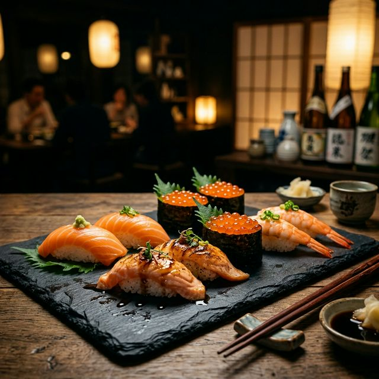
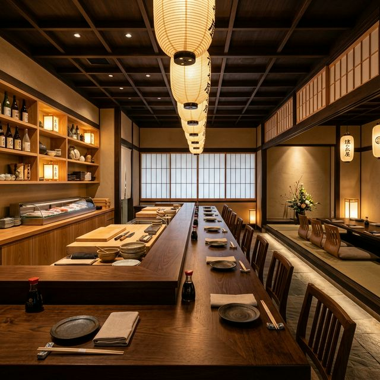
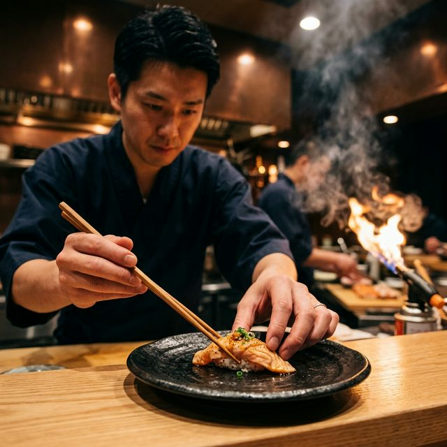
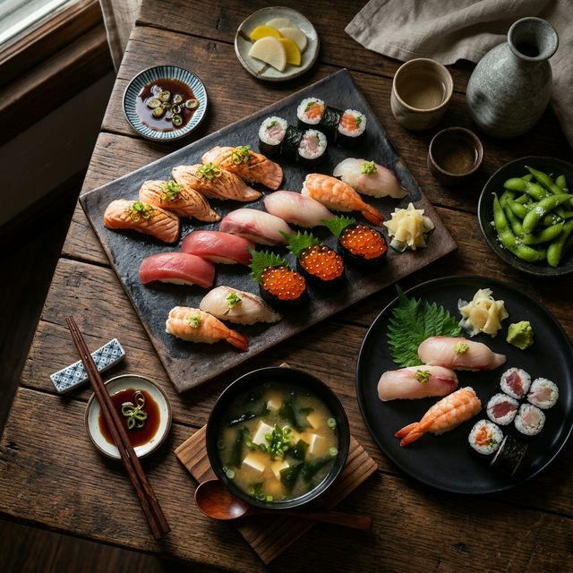

御壽司南京店秉持著對日本料理的熱忱與執著，堅持選用最新鮮的食材，以傳統技法結合創新巧思，呈現最純粹的壽司之美。
從每日清晨嚴選漁獲，到師傅精心捏製的每一貫壽司，我們追求的不僅是美味，更是一種對食材的敬意與對顧客的誠意。

「一貫入魂」— 每一貫壽司，都承載著我們對完美的追求
每日清晨精選當季最新鮮的漁獲，從產地到餐桌，嚴格把關每一道食材的品質
傳承日本壽司職人的精湛技藝，結合創新手法，讓傳統與現代完美交融
以真誠的心意款待每一位客人，讓您感受到賓至如歸的溫暖與舒適
用影像記錄每一份用心
職人精選的壽司饗宴
一貫入魂的堅持

每一道都是藝術品
沉浸在日式氛圍中
0975-276-309（11:00-16:00）
0975-173-024（16:00-02:00）
每日 11:00 — 凌晨 02:00
每週四公休